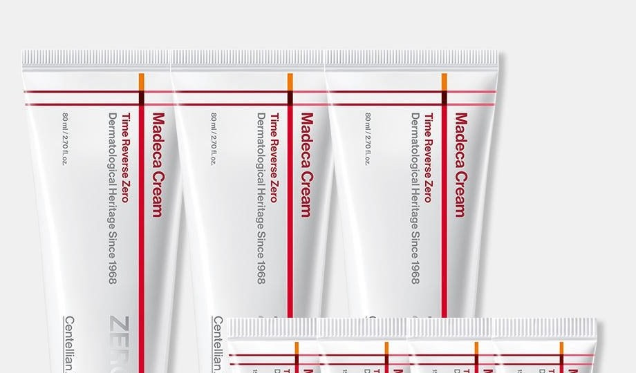

Centellian24 Madeca Cream Time Reverse Zero Review at a Glance
This Centellian24 Madeca Cream Time Reverse Zero review is about a cica cream from Centellian24 (센텔리안24), Dongkook Pharmaceutical’s well-known Centella brand. If you already know “The Madeca Cream,” pause: Time Reverse Zero is a separate SKU, and so is Tight Lifting. The Korean set we looked at packages three 80 ml jars with four 15 ml minis (about 300 ml in total) plus a gift bag.
In real Korean winter use — heated rooms, dry indoor air, a barrier that feels tight by 10 p.m. — this is the kind of rich cream people reach for after toner and serum. It is not a gel, not a sunscreen, and not a lightweight summer lotion.

What's in the Jar: Cica, Niacinamide and Retinol
| What we checked | What it says | Plain-English take |
|---|---|---|
| Cica / TECA complex | Madecassic acid, asiaticoside, asiatic acid, madecassoside on the INCI | The calming, repaired-feeling barrier story Centellian24 is known for |
| Niacinamide | Listed high; Korea brightening functional agent | Helps uneven tone look calmer over time |
| Panthenol, HA, ceramide NP | On the Korean panel we reviewed | Why the cream feels cushiony instead of watery |
| Adenosine + retinol | Both listed; dual functional (brightening + wrinkle) in Korea | Start slow if you are new to retinoids |
| Brand language | “Triple ZERO” and “Blue Active TECA 30,000 ppm” | Marketing claims — we quote them; we did not assay the ppm |


Lots we reviewed list manufacture with Kolmar Korea for Dongkook Pharmaceutical’s Centellian24 line. Full INCI can vary by lot — check the carton you receive. This is a cosmetic, not a medicine.
How to Use Centellian24 Madeca Cream Time Reverse Zero
- Cleanse and follow with toner (and serum, if you use one).
- Scoop a rice-grain to navy-bean amount — you do not need a thick mask layer.
- Warm it between your fingers and press over face and neck.
- Add a thin second layer on cheeks if the heating is on and skin still feels tight.
- In the morning, use a lighter pass only if you are very dry, then apply a separate sunscreen. This cream is not SPF.
Because retinol is on the INCI, we would not stack it the same night as a strong AHA/BHA or a prescription retinoid unless a clinician said otherwise. The 15 ml minis are perfect for a two-week patch-and-see period before you open the next full jar.
Texture, Feel and Finish
It spreads with a slight slip, then settles into a moist, not sticky, film. The finish is comforting rather than glass-skin dewy. On my T-zone the next morning I sometimes blot once with a tissue before makeup; cheeks usually look calm and cushioned.
What surprised me is how “winter pharmacy” it feels — closer to a barrier cream than to a trendy lightweight gel. What disappointed some testers in this category (and may disappoint you) is summer wear: if your skin runs oily, this can feel like one step too many once humidity climbs.


Key Details
| Detail | What we know |
|---|---|
| Brand | Centellian24 (Dongkook Pharmaceutical), Korea |
| Product | Madeca Cream Time Reverse Zero |
| Typical Korean set | 80 ml × 3 + 15 ml × 4 + gift bag |
| Format | Rich face cream in a teal jar |
| Korea functional claims | Brightening + wrinkle improvement |
| Routine step | Last leave-on cream, usually at night |
How It Compares
| Time Reverse Zero | The Madeca Cream | Tight Lifting | |
|---|---|---|---|
| Best known for | Sensitive / dry-skin comfort with dual functional claims | The original Madeca cream most people recognize | A firmer, lifting-oriented finish |
| Typical pack | Multi-jar gift set with minis | Standalone jars | Standalone jars |
| Choose it if | You want cushion + niacinamide / adenosine and extra testers | You already like the classic Madeca texture | You specifically want the lifting version |
Pros & Cons
| Pros | Cons |
|---|---|
| Comforting rich texture for heated indoor winters | Can feel heavy in humid weather or on oily skin |
| Clear dual functional labeling (brightening + wrinkle) | Listed retinol is a no-go for some users |
| 15 ml minis make testing and travel easy | Brand “ppm” figures are not something we independently verified |
| Easy to distinguish from the original Madeca Cream once you know the name | The exact Korean multi-pack is not a confirmed identical U.S. Amazon listing |
Who It Suits (and Who Should Skip It)
- Yes: Dry or reactive skin that wants a cica cream at night.
- Yes: Anyone who likes a gift set with spare jars and travel minis.
- Maybe: Combination skin — use less on the T-zone.
- Skip or ask a clinician first: If you cannot use retinoids, or you want a completely different finish (gel, lifting cream, or SPF).
Centellian24 Time Reverse Zero FAQ
Is this the same as The Madeca Cream?
No. Time Reverse Zero is a separate Centellian24 cream. The original The Madeca Cream and Madeca Cream Tight Lifting are different products.
Does it have retinol?
Yes. Retinol appears on the Korean INCI list we reviewed, along with adenosine. Patch-test and follow medical advice if you avoid retinoids.
Can I use it every night?
Many people in Korea treat it as a nightly cream. If you are new to retinol or your barrier is already angry, start every other night and wear sunscreen by day.
Is the Amazon jar the same as the Korean gift set?
Not necessarily. A single 80 ml jar is discussed on U.S. Amazon, but we could not confirm the Korean 80 ml × 3 + 15 ml × 4 bundle as an identical listing. Check the piece count before you buy.
Centellian24 Madeca Cream Time Reverse Zero
Korean cica cream. We could not confirm the exact Korean multi-pack on U.S. Amazon, so this opens a product-name search.